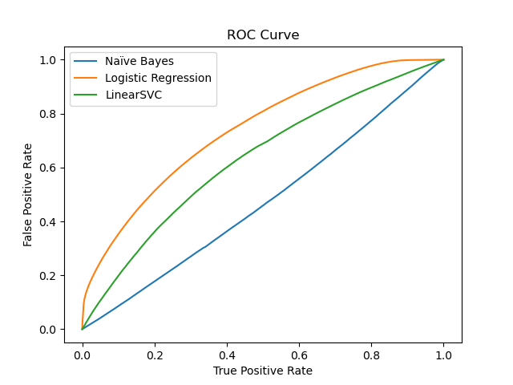

╒══════════════════════════════════════╤════════════╤═════════════╤══════════╤════════════╕
│ Models │ Accuracy │ Precision │ Recall │ F1 Score │
╞══════════════════════════════════════╪════════════╪═════════════╪══════════╪════════════╡
│ Logistic Regression Cross Validation │ 0.91 │ 0.92 │ 0.93 │ 0.91 │
│ Mulitnomial Naive Bayes │ 0.72 │ 0.74 │ 0.8 │ 0.72 │
│ SVM Cross Validation │ 0.92 │ 0.93 │ 0.94 │ 0.92 │
╘══════════════════════════════════════╧════════════╧═════════════╧══════════╧════════════╛Machine Learning Analysis
Executive Summary
For our Machine Learning (ML) Analysis we accomplished two separate tasks, one predicting comment sentiment and the second predicting comment controversy. We saw that an SVM model using cross validation was best at predicting comment sentiment, leading in all grading metrics we checked. This sentiment prediction model was saved following the results, with its training. For the models predicting comment controversy, we saw high overall accuracy, but that seemed to have been a result of class imbalance. We describe where the large imbalance between controversial and noncontroversial comments may have come from, and how it may have affected our results.
Additionally we attempted to implement a model outside of our business goals to see whether we would be able to predict karma scores. While we saw promising results for the first two, our karma scores models faced several issues and had what we considered ‘pitiful’ results, due to its low accuracy. We have chosen instead to include it in the further analysis section below.
Supervised Sentiment Learning
For training a sentiment classifier, we needed sentiment labels on part of our dataset. To generate these labels, we used the vaderSentiment python package and tweaked the cluster bootstrap script to install the packages on the driver nodes. A portion of the comments dataset (20%) was labelled using this Vader-Sentiment lexicon. These comments were then used to train a sentiment classifier using supervised learning models namely Logistic Regression, Multinomial Naive Bayes and Support Vector Machines (SVM). After applying 5-fold cross-validation and tuning hyperparameters, we obtained evaluation metrics for the three models as displayed below in table 1.
Table 4.1 : Evaluation Metrics for Supervised Sentiment Models
From table 4.1, it is evident that Support Vector Machines performed the best. This model was then saved and used to label the remaining 80% of the comments dataset. Figure 1 portrays the distribution of sentiments across the comments dataset.
This model classifies more comments as neutral as compared to the pre-trained models deployed in the Natural Language Processing analysis section. This is reflected in figure 2 where the sentiment distribution of live thread comments is presented.
Vader-Sentiment lexicon is optimized to work with tweets. Despite this, we observe no similarity with the pre-trained twitter model and the Vader-Sentiment model.
Predicting Controversiality
To accomplish this goal, we converted the text data to TF-IDF weighted vectors of the terms and used them as the input for a variety of models. Testing Logistic Regression, LinearSVC, and NaiveBayes models we sought to predict the controversiality in our comments, the results of which are listed below.
Figure 4.3 : ROC Curves for Different Models

Although the ROC curves would indicate that logistic regression was the best performing model, that may be a result of the class imbalance in controversiality. During our preprocessing steps we removed comments that were listed as ‘removed’ or ‘deleted’. We suspect that such comments removal likely affected the predictive capacity of our data set, compounding on the already existing class balance issues.
Table 4.2 : Evaluation Metrics for Controversiality Prediction Models
╒═════════════════════════╤════════════╤═════════════╤══════════╤════════════╕
│ Models │ Accuracy │ Precision │ Recall │ F1 Score │
╞═════════════════════════╪════════════╪═════════════╪══════════╪════════════╡
│ Logistic Regression │ 0.95 │ 0.95 │ 1 │ 0.92 │
│ Mulitnomial Naive Bayes │ 0.75 │ 0.96 │ 0.77 │ 0.82 │
│ LinearSVC │ 0.95 │ 0.95 │ 1 │ 0.92 │
╘═════════════════════════╧════════════╧═════════════╧══════════╧════════════╛In this table we see that both Logistic Regression and Linear SVC have seemingly perfect recall scores, a result of them almost entirely ignoring comments with controversiality labeled as 1. This appears to confirm our supposition that the underlying class imbalance in our dataset has led to biased models. We believe that this could be further improved in future analysis through the institution of oversampling or undersampling methods or training models such as Complement Naive Bayes that account for class imbalances.
Further Analysis (Predicting Karma Scores)
We also aimed at constructing a regression model to predict the score column in our comments dataset. For this purpose, we used a multitude of predictors such as sentiment_label (obtained from previously trained sentiment classifier), gilded, and distinguished to name a few. Our initial implementation of Linear Regression and Decision Tree models produced sub-optimal (R-squared value of 7%) results. We plan to further work on this task by tuning hyperparameters, assessing scaling requirements and incorporating additional predictors to obtain a well-performing regression model.